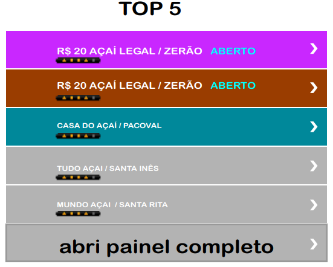

Meu Açai e um software de localização de bandeiras de açai o intuito e facilitação e comercialização do açai tanto para o produtor quanto para o cliente, facilitando o cliente chegar ate sua batedeira assim aumentando a produção no setor de vendas.
um modelo do nosso mapa para geolocalização para verificar quais batedeiras estão abertas e suas avaliações, levando ainda mais cliente para sua batedeira assim ajudando o comerciante de açai local. Podendo realizar buscas de outros produtos como farinha ou um peixe para entrega ou retirada.
Ranking
Na nossa plataforma tem um ranking para classificar as batedeira de açai como as melhores do mercado com as maiores avaliações, quais estão aberta, se são abertas 24 horas com as melhores classificações